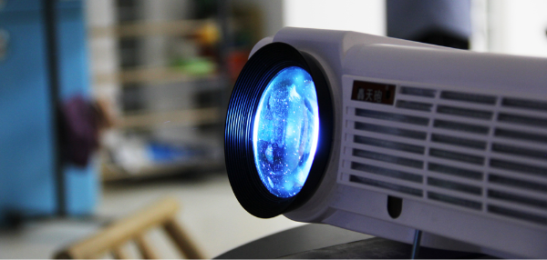

关于我们
CreatShare是由西安邮电大学若干位互联网爱好者共同组建的互联网创新实验室，也是学校成立的第一所互联网实验室
实验室成立于2012年2月14日，致力于设计与研发有用有趣的校园互联网产品，从而提升西邮人的网络生活品质， 并为西柚互联网爱好者提供研习与合作的平台，促进互联网氛围的形成和发展
目前实验室已经上线产品有：百盘，西邮导航，智慧教室，东区导航，畅校园微信服务平台等；待上线产品二手市场等
CreatShare位于东区教学楼FF104，环境优美，拥有数台主机和电脑供实验室的小伙伴学习，配备大量桌椅，每个人都有独立的学习及工作空间
实验室还配备投影仪及打印机，方便小伙伴进行演讲及会议总结，同时我们也拥有冰箱和空调，在炎热的夏天 也可以很安逸的完成学习任务~闲下来的时候我们也有羽毛球、桌球等活动可玩。对了，还有实验室不定期的团建呦~
Creatshare致力于设计与研发有用有趣的校园互联网产品，从而提升西邮人的网络生活品质，并为西邮的互联网深度爱好者提供研习与合作平台 ，促进互联网氛围形成和发展。实验室坚持创新、合作、开发的理念，身体力行，追求产品的优质体验，为梦想而不懈努力
畅校园是实验室成立的一个子品牌，专注于开发立足高校，服务师生群体的互联网产品或服务
畅校园是我们Creatshare实验室的主打品牌，同样我们也有很多其他的产品，目前我们看到的图书馆项目和查成绩以及空教室等功能 已经完全嫁接到畅校园公众号上啦，此外我们还有百盘，二手市场，东区导航，小程序和智慧教室呦~
与技术大神一起亲手孕育互联网产品的机会，与非技术大神一起养产品的经历，将课本中的知识加以实践。24小时零食WIFI不间断空调不断舒适的 工作环境，知名互联网公司内推名额等等......这些都不重要，重要的是能认识到志同道合的朋友，大家相互见证一起成长